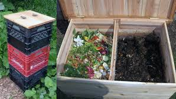
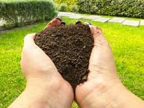
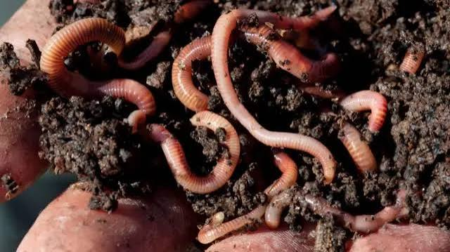
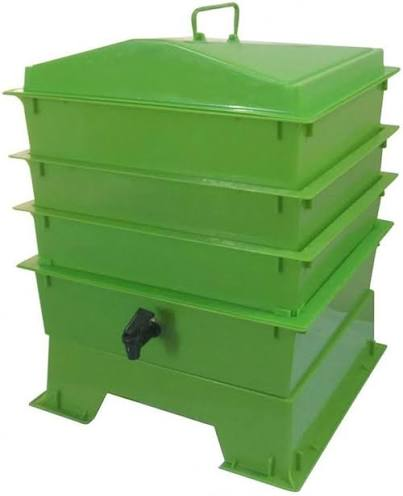
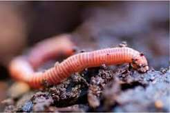
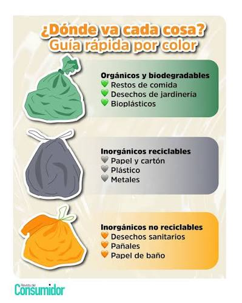
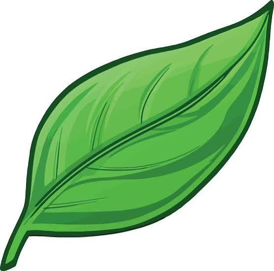

La lombricomposta es un método natural para transformar
residuos orgánicos en un fertilizante de alta calidad mediante
la acción de lombrices y microorganismos.
También se conoce como vermicomposta,
vermicompostaje o humus de lombriz.
Este proceso permite reciclar restos de alimentos y convertirlos en
un abono rico en nutrientes para plantas y cultivos.

La lombricomposta es el producto obtenido
cuando las lombrices, principalmente la especie
Eisenia fetida (lombriz roja californiana), consumen
materia orgánica en descomposición y la
transforman en humus, un material oscuro, suave y muy férti


el proceso de lombricompostaje ocurre cuando las lombrices
consumen residuos orgánicos como
frutas, verduras, hojas secas y cartón.
Durante la digestión, estos materiales son transformados
en humus rico en nutrientes
y microorganismos beneficiosos para el suelo.
Puede ser una caja de plástico, madera
o un vermicompostador especializado.

La especie más utilizada es la lombriz roja californiana
(Eisenia fetida) debido a su rápida reproducción
capacidad para procesar residuos.

Estos materiales pueden producir malos olores y atraer plagas.

Para mantener un sistema de lombricomposta saludable se recomienda:
Puede provocar malos olores y afectar a las lombrices.
Los residuos se acumulan sin descomponerse.
Atraen plagas y generan malos olores.
Las lombrices pueden morir rápidamente
